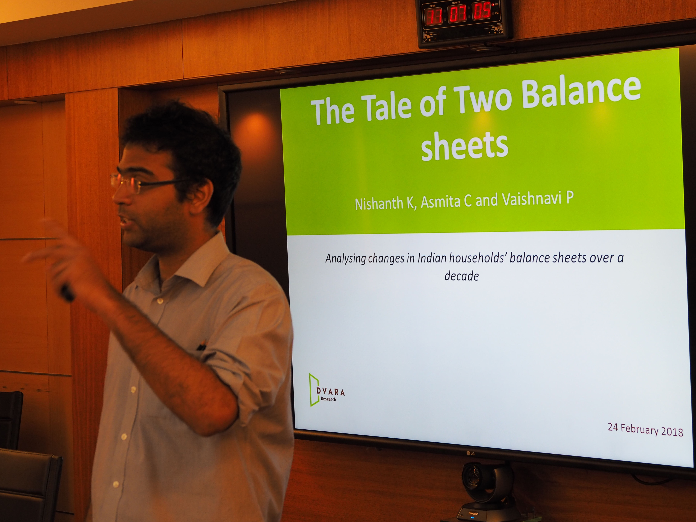
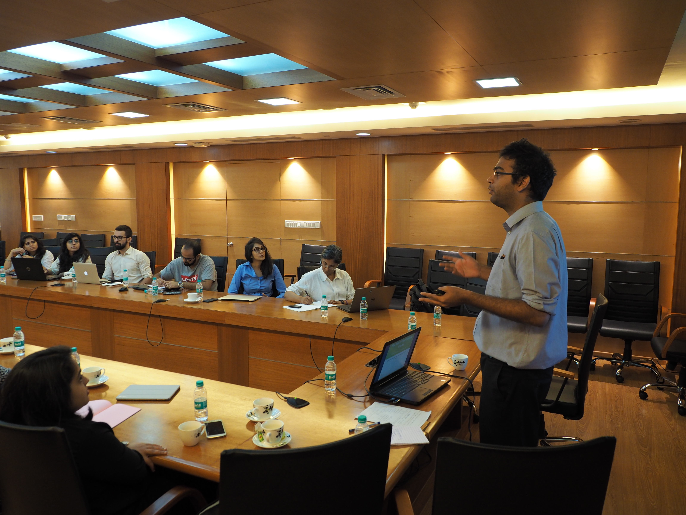
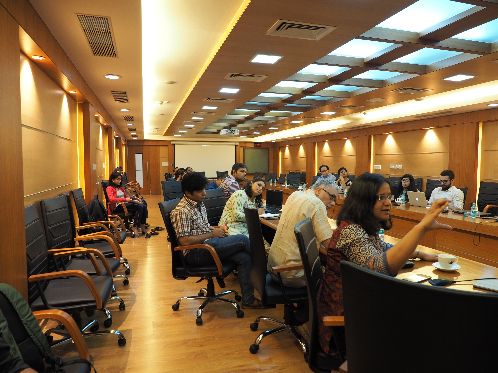

24th February, 2018
Seanza Conference Hall, Indira Gandhi Institute of Development
Research, Mumbai
The field workshop aims to bring together experts in a field to discuss research ideas and policy relevant questions, dedicating time for discussion and presentation that is larger than presentation at the typical research conference. The audience for these workshops includes academics, participants from the domestic and international legal and financial industry, policy makers from the local government as well as regulators.
The tentative agenda for the workshop follows:
| 09:00 - 09:45 | Registration, Coffee and Tea |
| 09:45 - 10:00 | Welcome address Susan Thomas, IGIDR |
| 10:00 - 11:00 | Simulating Pension Income Scenarios with penCalc: An Illustration for India's National Pension System [presentation] Renuka Sane, NIPFP and William Price, World Bank |
| 11:00 - 12:00 | A Tale of Two Balance Sheets: Analysing changes in Indian households balance sheets over a decade [presentation] Asmita Chatterjee, Nishanth Kumar and Vaishnavi Prathap, Dvara Research |
| 12:00 - 13:00 | LUNCH |
| 13:00 - 14:00 | Indian Household Finance: Debt and Insurance Vimal Balasubramaniam, University of Warwick |
| 14:00 - 15:00 | Panel discussion: Intermediaries for better financial access |
| 15:00 - 15:15 | Summing up Susan Thomas, IGIDR |


